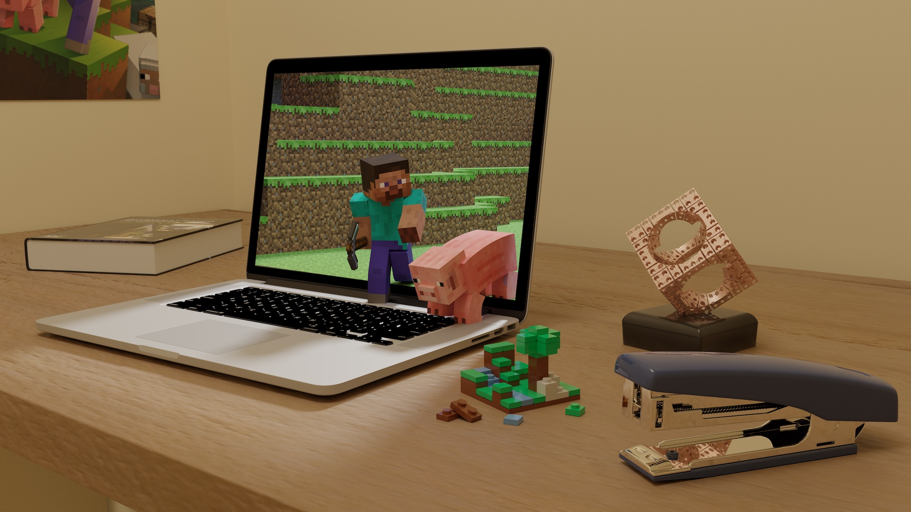
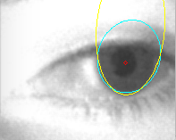
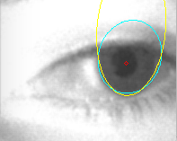

1 month at Shopify in 2014, 2 months at Shopify in 2013, 2 months at The Eclipse Foundation in 2012, 3 weeks at Halogen in 2012.
Selected Projects
{% assign imagewidth = 80 %} {% assign sectioncontent = site.data.resume['Projects'] | slice: 0, firstprojects %} {% include plainsection.html %}




